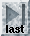
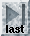

 
The file browser is a dialogue that allows the user to select files from any directory. It is typically used when choosing a file for a particular action, such as opening a database in gap or saving a trace file in trev. The precise details of the layout may change depending on this context. In some circumstances, such as loading sequences into spin several files may be selected (in which case the dialogue will be titled "Open multiple files"), in others only a single file can be selected. The illustration below shows the file browser as displayed when opening files from within trev. The `Formats' and `Filter' section here are used to select different file types. These dialogue components may not appear in all file browsers.
The `OK', `Filter' and `Cancel' buttons perform their usual tasks; `OK' accepts the file currently shown in the selection component, and `Cancel' quits the dialogue.